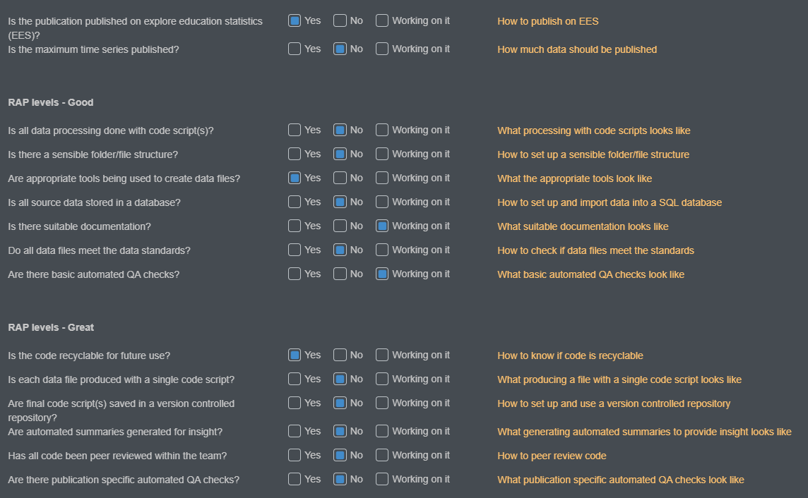
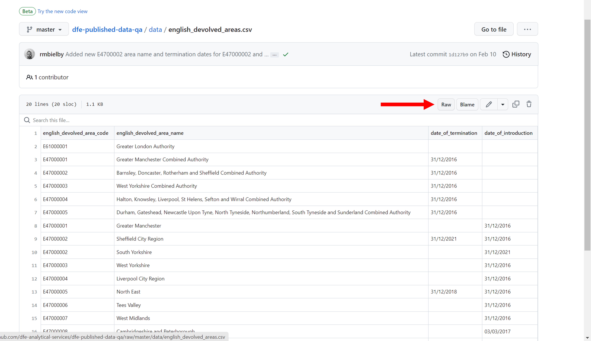
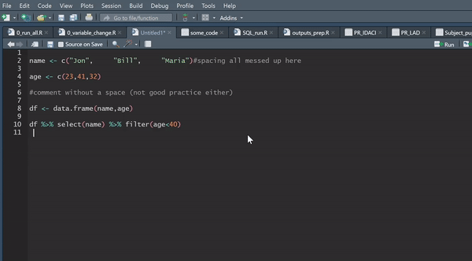
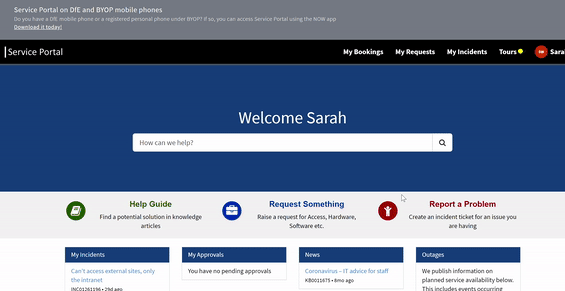

library(odbc)
library(dplyr)
library(dbplyr)
library(DBI)
# Step 1.1.: Connect to source server -------------------------------------------
con_source <- dbConnect(odbc(),
Driver = "SQL Server Native Client 11.0",
Server = "Name_of_source_server",
Database = "Source_database",
Trusted_Connection = "yes"
)
# Step 1.2.: Connect to target server
con_target <- dbConnect(odbc(),
Driver = "SQL Server Native Client 11.0",
Server = "Name_of_target_server",
Database = "Your_target_database",
Trusted_Connection = "yes"
)
# Step 2.1.: Pull the table from the source database
table_for_transfer <- tbl(con_source,in_schema("schema_name", "table_name")) %>% collect()
# Step 2.2.: Copy table into target database
dbWriteTable(con_target,"whatever_you_want_to_call_new_table", table_for_transfer)RAP for Statistics
Guidance for how to implement the principles of Reproducible Analytical Pipelines (RAP) into statistics production processes
What is RAP?
RAP (Reproducible Analytical Pipelines) are a way to create well documented, reproducible, quality analysis using the best tools available to us as analysts. In 2022, the Analysis Function published their RAP strategy, which outlines the expectation that RAP should be “the default approach to analysis in government”. Each department is expected to publish a RAP implementation strategy to explain how they are going to support analysts to embed RAP into their day to day work. You can view the RAP implementation plans for all departments, including DfE on the Analysis Function website.
Cam ran an introduction to RAP session for DISD in December 2020. The slides can be found on GitHub, or you can watch the recording.
RAP means using automation to our advantage when analysing data, which can be as simple as writing code so that we can click a button to execute and do the job for us. Most analysts will be using elements of RAP in their work, such as quality assurance and version control, without even thinking about it!
Cross-government RAP champions have laid out a minimum level of RAP to aim for. In DfE we have adapted these to form our own RAP baseline standards, which are described in detail on this page.
Note
There is currently a clear expectation at DfE that any analyst working in statistics production should know RAP principles and be able to implement them using the recommended tools to meet at least the department’s definitions of “good” and “great” practice.
Benefits of RAP
According to the Analysis Function, using RAP should:
- improve the quality of the analysis
- increase trust in the analysis by producers, their managers and users
- create a more efficient process
- improve business continuity and knowledge management
In DfE, we already have ‘analytical pipelines’ and have done for many years. The aim of RAP is to automate the parts of these pipelines that can be automated, to increase efficiency and accuracy, while creating a clear audit trail to allow analyses to easily be re-run if needed. This will free us up to focus on the parts of our work where our human input can really add value. RAP is something we can use to reduce the burden on us by getting rid of some of the boring stuff, what’s not to like! RAP can also reduce risk through human error, since you will no longer have to copy and paste numbers between different documents or make substantial manual edits to code each time you need to re-run it.
Our scope
We want to focus on the parts of the production process that we have ownership and control over – so for statistics production we are focussing on the process from data sources to publishable data files. This is the part of the process where RAP can currently add the most value - automating the production and quality assurance of our outputs currently takes up huge amount of analytical resource, which could be better spent providing insight and other value adding activity.

In Official Statistics production we are using RAP as a framework for best practice when producing our published data files, as these are the foundations of our publications moving forward. Following this framework will help us to improve and standardise our current production processes and provide a clear ‘pipeline’ for analysts to follow. To get started with RAP, we first need to be able to understand what it actually means in practice, and be able to assess our own work against the principles of RAP. From there, we can work out what training is needed, if any, and where additional support can help teams to meet the baseline.
In other areas of analysis, we recommend that RAP principles are applied proportionately. Whilst you wouldn’t create a full RAP process for an ad-hoc, you could still version control your code so that it could be reused if similar requests came in, and you should get your code peer reviewed by someone before sending out any results.
Implementing RAP for us will involve combining the use of SQL, R, and clear, consistent version control to increase efficiency and accuracy in our work. For more information on what these tools are, why we are using them, and resources to help upskill in those areas, see our learning resources page.
The collection of, and routine checking of data as it is coming into the department is also an area that RAP can be applied to. We have kept this out of scope at the moment as the levels of control in this area vary wildly from team to team. If you would like advice and help to automate any particular processes, feel free to contact the Statistics Development Team.
Core principles
RAP has three core principles:
Preparing data: Data sources for a publication are stored in the same database
Writing code: Underlying data files are produced using code, with no manual steps
Version control: Files and scripts should be appropriately version controlled
Within each of these principles are separate elements of RAP. Each of these is discussed in detail below so that you know what is expected of you as an analyst.
RAP in practice
The diagram below highlights what RAP means for us, and the varying levels in which it can be applied in all types of analysis. You can click on each of the hexagons in the diagram to learn more about each of the RAP principles and how to use them in practice.
The expectation is that all statistics publications will meet the department’s baseline implementation of RAP, using the self-assessment tool to monitor their progress. It’s worth acknowledging that some teams are already working around great and best practice levels, and that we appreciate every team’s situation is unique, our guidance is designed to be applicable across all official statistics publications by DfE. Once teams achieve baseline status, their RAP process will be audited.
What is expected
Warning
It is expected that all teams’ processes meet all elements of good and great practice as a baseline.
Teams are expected to review their own processes using the publication self-assessment tool and use the guidance on this site to start making improvements towards meeting the core principles if they aren’t already. If you would like additional help to review your processes, please contact the Statistics Development Team.
Teams will start from different places and implement changes at different rates, and in different ways. We do not expect that every team will follow the same path, or even end at the same point. Don’t worry if this seems overwhelming at first, use the guidance here to identify areas for improvement and then tackle them with confidence.
While working to reach our baseline expectation of good and great practice, you can track your progress in the publication self-assessment tool and contact the Statistics Development Team for help and support.
How to assess your publication
The checklist provided in the publication self-assessment tool, shown below, is designed to make reviewing our processes against our RAP levels easier, giving a straightforward list of questions to check your work against. This will flag potential areas of improvement, and you can then use the links on the right hand side to go to the specific section of this page to find more detail and guidance on how to develop your current processes in line with best practice.

Some teams will already be looking at best practice, while others will still have work to do to achieve the department’s baseline of good and great practice. We know that all teams are starting this from different points, and are here to support all teams from their respective starting positions.
How to get started with RAP
Check your analysis against the Good, Great and Best practice standards under RAP in practice.
Measure your publication against the RAP levels using our self assessment tool. This will give you a good starting point and initial points to work on to progress to the next level of RAP.
Once you’ve assessed your publication, have a look through our guidance below to narrow down how you can get started with improving those parts of your process.
The Statistics Development Team invites teams to take part in our partnership programme to develop their skills and implement RAP principles to a relevant project. Partnership programmes can offer additional resource and dedicated support to your team to implement specific RAP principles. Visit our page on getting started with the partnership programme for more details.
How does RAP fit into ADA / Databricks
Teams can use data held on the Databricks platform to implement RAP principles like version control, automated QA and automated pipelines. If you have an existing pipeline, please see the ADA guidance on statistics publications to see how migrating to ADA and Databricks will affect your work.
Preparing data
Preparing data is our first core RAP principle, which contains the following elements:
Your team should store the raw data you use to create underlying data in a Microsoft SQL Server database or in the Databricks platform. These are similar to a Sharepoint area or a shared folder, but offer dedicated data storage areas and allow multiple users to use the same file at once. This means that you can also run code against a single source of data, further reducing the risk of error.
All source data stored in a database

What does this mean?
When we refer to ‘source data’, we take this to mean the data you use at the start of your process to create the underlying data files. Any cleaning at the end of a collection will happen before this.
In order for us to be able to have an end-to-end data pipeline where we can replicate our analysis across the department, we should store all of the raw data needed to create aggregate statistics in a managed Microsoft SQL Server or in the Databricks platform. This includes any lookup tables and all administrative data from collections prior to any manual processing. This allows us to then match and join the data together in an end-to-end process using SQL queries.
As far as meeting the requirement to have all source data in a database, databases other than SQL or Databricks may be acceptable, though we can’t support them in the same way.
Why do it?
The principle is that this source data will remain stable and is the point you can go back to and re-run the processes from if necessary. If for any reason the source data needs to change, your processes will be set up in a way that you can easily re-run them to get updated outputs based on the amended source data with minimal effort.
SQL is a fantastic language for large scale data joining and manipulation; it allows us to replicate end-to-end from raw data to final aggregate statistics output. Having all the data in one place and processing it in one place makes our lives easier, and also helps us when auditing our work and ensuring reproducibility of results. You can run SQL queries against data in SQL Server or in Databricks, although SQL Server makes use of T-SQL and Databricks makes use of Spark SQL.
How to get started
For a collection of relevant resources to use when learning SQL, see our learning resources page, and for guidance on best practice when writing SQL queries, see the writing code and documentation sections on this page, as well as the guides immediately below on how to set up and use a SQL database.
For resources to help you learn about Databricks and how to migrate your data into the Unity Catalog, please see our ADA and Databricks documentation. Legacy servers will be decommissioned in 2026, and all data will be migrated into the Databricks Unity Catalog instead.
How to set up a SQL working area
There are a few different options, depending on where you want your new area to exist. Visit our SQL learning page for details.
Moving data to different areas
If your data is already in SQL Server, you can use this snippet of R code to move tables from one area (e.g. the iStore) to another (e.g. your team’s modelling area) to ensure all data are stored in a database.
Importing data to SQL Server
There’s lots of guidance online of how to import flat files from shared areas into Microsoft SQL Server on the internet, including this guide.
Remember that it is important to import them with consistent, thought-through naming conventions. You will thank yourself later.
How to grant access to your area
Much like setting up a SQL area, there are different ways to do this depending on the server your database is in. Visit our SQL learning page for details.
Files meet data standards
Open Data Standards
You can find information on our standards for Open Data, including how to assess your data against these standards, on our Open Data standards page.
Standardised reference data
There will of course be cases where some of the data you use is reference data not owned by the DfE, or is available online for you to download rather than in an internal server. There are ways of incorporating this into a reproducible analytical pipeline nicely, sometimes you can even use links/URLs in your code that will always pull the latest data such that you will never need to change the link to reflect updates to the data!
Raw files on GitHub
If you want to use reference data from GitHub, you can use the URL to the raw file. A common example of when you might want to use this would be to use geographic lookup tables that contain names and codes of different geographic levels for EES files (which are available in our data screener repository).
If you find the data you’re interested in within a repository, rather than copying, cloning or downloading the data, you should click the ‘raw’ button (see the below screenshot).

This should take you to a new window which contains the raw data from the CSV file. Copy the URL from this page, as this is what we can use to pull the latest data into our code.
You can now use this URL as you would use a file path in a read.csv() query. For example;
devolved_area_lookup <- read.csv("https://raw.githubusercontent.com/dfe-analytical-services/dfe-published-data-qa/master/data/english_devolved_areas.csv")The above code snippet will load in the data as it would with any other CSV, however the benefit is if that data file is updated on GitHub, when you run the code it will always pull the latest version. This is especially useful for lookup tables and reference data, and is best RAP practice as it removed the need for any manual steps (like downloading, copying & pasting or manually updating the data/code!)
Sensible folder and file structure
What does this mean?
As a minimum you should have a folder that includes all of the final versions of documents produced and published, per release, within a folder for the wider publication. Ask yourself if it would be easy for someone who isn’t in the team to find specific files, and if not, is there a better way that you could name and structure your folders to make them more intuitive to navigate?
Why do it?
How you organize and name your files will have a big impact on your ability to find those files later and to understand what they contain. You should be consistent and descriptive in naming and organizing files so that it is obvious where to find specific data and what the files contain.
How to get started
Some questions to help you consider whether your folder structure is sensible are:
- Are all documentation, code and outputs for the publication saved in one folder area?
- Is simple version control clearly applied (e.g. having all final files in a folder named “final”?
- Are there sub-folders like ‘code’, ‘documentation’‘, ’outputs’ and ‘final’ to save the relevant working files in?
- Are you keeping a version log up to date with any changes made to files in this final folder?
You could also consider using the create_project() function from the dfeR package to create a pre-populated folder structure for use with an R project
Naming conventions
Having a clear and consistent naming convention for your files is critical. Remember that file names should:
Be machine readable
- Avoid spaces.
- Avoid special characters such as: ~ ! @ # $ % ^ & * ( ) ` ; < > ? , [ ] { } ‘ “.
- Be as short as practicable; overly long names do not work well with all types of software.
Be human readable
- Be easy to understand the contents from the name.
Play well with default ordering
- Often (though not always!) you should have numbers first, particularly if your file names include dates.
- Follow the ISO 8601 date standard (YYYYMMDD) to ensure that all of your files stay in chronological order.
- Use leading zeros to left pad numbers and ensure files sort properly, e.g. using 01, 02, 03 to avoid 1, 10, 2, 3.
If in doubt, take a look at this presentation, or this naming convention guide by Stanford, for examples reinforcing the above.
Writing code
Writing code is our second core RAP principle, and is made up of the following elements:
- Processing is done with code
- Use appropriate tools
- Whole publication production scripts
- Dataset production scripts
- Recyclable code for future use
- Clean final code
- Peer review of code within team
- Peer review of code from outside the team
- Basic automated QA
- Publication specific automated QA
- Automated summaries
- Publication specific automated summaries
Tip
The key thing to remember is that we should be automating everything we can, and the key to automation is writing code. Using code is as simple as telling your computer what to do. Code is just a list of instructions in a language that your computer can understand. We have links to many resources to help you learn to code on our learning support page.
Processing is done with code
What does this mean?
All extraction, and processing of data should be done using code, avoiding any manual steps and moving away from a reliance on Excel, SPSS, and other manual processing. In order to carry out our jobs to the best of our ability it is imperative that we use the appropriate tools for the work that we do.
Even steps such as copy and pasting data, or pointing and clicking, are fraught with danger, and these risks should be minimised by using code to document and execute these processes instead.
Why do it?
Using code brings numerous benefits. Computers are far quicker, more accurate, and far more reliable than humans in many of the tasks that we do. Writing out these instructions saves us significant amounts of time, particularly when code can be reused in future years, or even next week when one specific number in the source file suddenly changes. Code scripts also provide us with editable documentation for our production processes, saving the need for writing down information in extra documents.
Reliability is a huge benefit of the automation that RAP brings - when your data has to be amended a week before publication, it’s a life saver to know that you can re-run your process in minutes, and reassuring to know that it will give you the result you want. You can run the same code 100 times, and be confident that it will follow the same steps in the same order every single time.
How to get started
See our learning resources for a wealth of resources on SQL and R to learn the skills required to translate your process into code.
There are also two sections below with examples of tidying data in SQL and R to get you started.
Ensure that any last-minute fixes to the process are written in the code and not done with manual changes.
Producing tidy underlying data in SQL
To get started, here is a SQL query that you can run on your own machine and walks you through the basics of tidying a simple example dataset in SQL.
Tidying and processing data in R
Here is a video of Hadley Wickham talking about how to tidy your data to these principles in R. This covers useful functions and how to complete common data tidying tasks in R. Also worth taking a look at applied data tidying in R, by RStudio.
Using the %>% pipe in R can be incredibly powerful, and make your code much easier to follow, as well as more efficient. If you aren’t yet familiar with this, have a look at this article that provides a useful beginners guide to piping and the kinds of functions you can use it for. The possibilities stretch about as far as your imagination, and if you have a function or task you want to do within a pipe, googling ‘how do I do X in dplyr r’ will usually start to point you in the right direction, alternatively you can contact us, and we’ll be happy to help you figure out how to do what you need.
A quick example of how powerful this is is below. The pipe operator passes the outcome of each line of code onto the next, so you can complete multiple steps of data manipulation in one section of code instead of writing separate steps for each one. In this code, we:
- start with my_data
- calculate a percentage column using mutate
- rename the percentage column we created to “newPercentageColumn”, rename “number” to “numberColumn”, and rename “population” to “totalPopulationColumn”
- use the
clean_names()function from the janitor package to ensure that columns have consistent naming standards - use the
remove_empty()function from the janitor package to remove any rows and columns that are composed entirely of NA values - filter the dataframe to only include Regional geographic level data
- order the dataframe by time period and region name
processed_regional_data <- my_data %>%
mutate(newPercentageColumn = (numberColumn / totalPopulationColumn) * 100) %>%
rename(newPercentageColumn = percentageRate,
numberColumn = number,
totalPopulationColumn = population) %>%
clean_names() %>%
remove_empty() %>%
filter(geographic_level == "Regional") %>%
arrange(time_period, region_name)Helpful new functions in the tidyverse packages can help you to easily transform data from wide to long format (see tip 2 in the linked article for this, as it is often required for tidy data), as well as providing you with tools to allow you quickly and efficiently change the structure of your variables.
For further resources on learning R so that you’re able to apply it to your everyday work, have a look at the learning resources page.
Use appropriate tools
What does this mean?
Using the recommended tools on our learning page (SQL, R and Git), or other suitable alternatives that allow you to meet the core principles. Ideally any tools used would be open source, Python is a good example of a tool that would also be well suited, though is less widely used in DfE and has a steeper learning curve than R.
Open-source refers to something people can modify and share because its design is publicly accessible. For more information, take a look at this explanation of open-source, as well as this guide to working in an open-source way. In practical terms, this means moving away from the likes of SPSS, SAS and Excel VBA, and utilising the likes of R or Python, version controlled with git, and hosted in a publicly accessible repository.
Why do it?
There are many reasons why we have recommended the tools that we have, the recommended tools are:
- already in use at the department and easy for us to access
- easy and free to learn
- designed for the work that we do
- used widely across data science in both the public and private sector
- allow us to meet best practice when applying RAP to our processes
How to get started
Go to our learning page to read more about the recommended tools for the jobs we do, as well as looking at the resources available there for how to build capability in them. Always feel free to contact us if you have any specific questions or would like help in understanding how to use those tools in your work.
By following our guidance in saving versions of code in an Azure DevOps, we will then be able to mirror those repositories in a publicly available GitHub area.
Whole publication production scripts
What does this mean?
The ultimate aim is to utilise a single script to document and run off everything for a publication, the data files, any QA, any summary reports. This script should allow you to run individual outputs by themselves as well, so make sure that each data file can be run in isolation by running single lines of this script. All quality assurance for a file is also included in the single script that can be used to create a file from source data (see the dataset production scripts section)
Why do it?
This carries all of the same benefits as having a single ‘run’ script for a file, but at a wider publication level, effectively documenting the entire publication process in one place. This makes it easier for new analysts to pick up the process, as well as making it quicker and easier to rerun as all reports relating to that file are immediately available if you ever make changes file.
How to get started
The Education, Health and Care Plans production cycle is a good example of a single publication ‘run’ script. They have kept their actual data processing in SQL, but all the running and manipulation of the data happens in R.
The cycle originally consisted of multiple SQL scripts, manual QA and generation of final files.

The team now have their end-to-end process fully documented, which can be run off of one single R script. The ‘run’ script points at the SQL scripts to run them all in one go, and also creates a QA report and corresponding metadata files that pass the data screener. Each data file can still be run in isolation from this script.

Using ‘run’ scripts
Utilising a single ‘run’ script to execute processes written in other scripts brings a number of benefits. It isn’t just about removing the need to manually trigger different code scripts to get the outputs, but it means the entire process, from start to finish, is fully documented in one place. This has a huge number of benefits, particularly for enabling new team members to pick up existing work quickly, without wasting time struggling to understand what has been done in the past.
Connecting R to SQL
In order to create a single script to run all processes from, it is likely that you will need to use R to run SQL queries. If you are unsure of how to do this, take a look the guide on the dfeR connecting to SQL documentation.
If you prefer a video, Chris Mason-Thom did a coffee and coding session on this.
Dataset production scripts

What does this mean?
Each dataset can be created by running a single script, which may ‘source’ multiple scripts within it. This does not mean that all of the code to create a file must be written in a single script, but instead that there is a single ‘create file’ or ‘run’ script that sources every step in the correct order such that every step from beginning to end will be executed if you run that single ‘run’ script.
This ‘run’ script should take the source data right through to final output at the push of a button, including any manipulation, aggregation, suppression etc.
Why do it?
Having a script that documents the whole process for this saves time when needing to rerun processes, and provides a clear documentation of how a file is produced.
How to get started
Review your current process - how many file scripts does it take to get from source data to final output, why are they separated, and what order should they be run in? Do you still have manual steps that could introduce human error (for example, manually moving column orders around in excel)?
You should automate any manual steps such as the example above. If it makes sense to, you could combine certain scripts to reduce the number. You can then write code in R to execute your scripts in order, so you are still only running one script to get the final output.
Recyclable code for future use
What does this mean?
We’d expect that any recyclable code would take less than 30 minutes of editing before being able to run again in a future iteration of the publication.
Why do it?
One huge benefit that comes with using code in our processes, is that we can pick them up in future years and reuse with minimum effort, saving us huge amounts of resource. To be able to do this, we need to be conscious of how we write our code, and write it in a way that makes it easy to use in future releases for the publication.
How to get started
Review your code and consider the following:
- What steps might need re-editing or could become irrelevant?
- Can you move all variables that require manual input (e.g. table names, years) to be assigned at the top of the code, so it’s easy to edit in one place with each iteration?
- Are there any fixed variables that are prone to changing such as geographic boundaries, that you could start preparing for changes now by making it easy to adapt in future?
For example, if you refer to the year of publication in your code a lot, consider replacing every instance with a named variable, which you only need to change once at the start of your code. In the example below, the year is set at the top of the code, and is used to define “prev_year”, both of which are used further down the code to filter the data based on year.
this_year <- 2020
prev_year <- this_year - 1
data_filtered <- data %>%
filter(year == this_year)
data_filtered_last_year <- data %>%
filter(year == prev_year)Standards for coding
Code can be written in many different ways, and in languages such as R, there are often many different functions and routes that you can take to get to the same end result. On top of that, there are even more possibilities for how you can format the code. This section will take you through some widely used standards for coding to help bring standardisation to this area and make it easier to both write and use our code.
Clean final code
What does this mean?
This code should meet the best practice standards below (for SQL and R). If you are using a different language, such as Python, then contact us for advice on the best standards to use when writing code.
There should be no redundant or duplicated code, even if this has been commented out. It should be removed from the files to prevent confusion further down the line.
The only comments left in the code should be those describing the decisions you have made to help other analysts (and future you) to understand your code. More guidance on commenting in code can be found later on this page.
Why do it?
Clean code is efficient, easy to write, easy to review, and easy to amend for future use. Below are some recommended standards to follow when writing code in SQL and R.
How to get started
Watch this coffee and coding session introducing good code practice, which covers:
- key principles of good code practice
- writing and refining code to make it easier to understand and modify
- a real-life example of code improvement from within DfE
Then you should also watch the follow up intermediate session, which covers:
- version control
- improving code structure with functions
- documentation and Markdown
- interactive notebooks
Clean code should include comments. Comment why you’ve made decisions, don’t comment what you are doing unless it is particularly complex as the code itself describes what you are doing. If in doubt, more comments are better than too few though. Ideally any specific comments or documentation should be alongside the code itself, rather than in separate documents.
SQL
For best practice on writing T-SQL code used in SQL Server, here is a particularly useful Word document produced by our Data Hub. This outlines a variety of best practices, ranging from naming conventions, to formatting your SQL code so that it is easy to follow visually.
R
When using R, it is generally best practice to use R projects as directories for your work.
The recommended standard for styling your code in R is the tidyverse styling, which is fast becoming the global standard. What is even better is that you can automate this using the styler package, which will literally style your code for you at the click of a button, and is well worth a look.

There is also plenty of guidance around the internet for best practice when writing efficient R code.
To help you standardise your code further, you can make use of the functions contained within our dfeR package. The package includes functions to standardise formatting and rounding, to pull the latest ONS geography lookups, and to create a pre-populated folder structure, amongst many other things.
HTML
If you ever find yourself writing HTML, or creating it through RMarkdown, you can check your HTML using W3’s validator.
Peer review of code within team
What does this mean?
Peer review is an important element of quality assuring our work. We often do it without realising by bouncing ideas off of one another and by getting others to ‘idiot check’ our work. When writing code, ensuring that we get our work formally peer reviewed is particularly important for ensuring it’s quality and value. The Duck Book and Tidyteam contain detailed guidance on peer review, but we have summarised some of the information here for you as well.
Prior to receiving code for peer review, the author should ensure that all code files are clean, commented appropriately and for larger projects should be held in a repo with an appropriate README file.
You should check:
Is someone else in the team able to generate the same outputs?
Has someone else in the team reviewed the code and given feedback?
Have you taken on their feedback and improved the code?
Why do it?
There are many benefits to this, for example:
Ensuring consistency across the team
Minimizing mistakes and their impact
Ensuring the requirements are met
Improving code performance
Sharing of techniques and knowledge
How to get started
When peer reviewing code you should consider the following questions -
- Do you understand what the code does? If not, is there supporting documentation or code comments that allow you to understand it?
- Does the code do what the author intended?
- Have any dependencies (either on separate pieces of code, data files, or packages) been documented?
- Are there any tests / checks that could be added into the code that would help to give greater confidence that it is doing what it is intended to?
- Are there comments explaining why any decisions have been made?
- Is the code written and structured sensibly?
- Are there any ways to make the code more efficient (either in number of lines or raw speed)? Is there duplication that could be simplified using functions?
- Does the code follow best practice for styling and structure?
- Are there any other teams/bits of code you’re aware of that do similar things and would be useful to point the authors towards?
- At the end of the review, was there any information you needed to ask about that should be made more apparent in the code or documentation?
Depending on your access you may or may not be able to run the code yourself, but there should be enough information within the code and documentation to be able to respond to the questions above. If you are able to run the code, you could also check -
- Does the code run without errors? If warnings are displayed, are they explained?
- If the project has unit/integration tests, do they pass?
- Can you replicate previous output using the same code and input data?
If you would like a more thorough list of questions to follow, then the Duck Book has checklists available for three levels of peer review, based on risk:
If you’re unfamiliar with giving feedback on someone’s code then it can be daunting at first. Feedback should always be constructive and practical. It is recommended that you use the CEDAR model to structure your comments:
Context - describe the issue and the potential impact
Examples - give specific examples of when and where the issue has been present (specifying the line numbers of the code where the issue can be found can be useful here)
Diagnosis - use the example to discuss why this approach was taken, what could have been done differently and why alternatives could be an improvement
Actions - ask the person receiving feedback to suggest actions that they could follow to avoid this issue in future
Review - if you have time, revisit the discussion to look for progress following on from the feedback
Other tips for getting started with peer review can be found in the Duck Book
The Duck Book also contains some helpful code QA checklists to help get you thinking about what to check
Improving code performance
Peer reviewing code and not sure where to start? Improving code performance can be a great quick-win for many production teams. There will be cases where code you are reviewing does things in a slightly different way to how you would: profiling the R code with the microbenchmark package is a way to objectively figure out which method is more efficient.
For example below, we are testing out case_when, if_else and ifelse.
microbenchmark::microbenchmark(
case_when(1:1000 < 3 ~ "low", TRUE ~ "high"),
if_else(1:1000 < 3, "low", "high"),
ifelse(1:1000 < 3, "low", "high")
)Running the code outputs a table in the R console, giving profile stats for each expression. Here, it is clear that on average, if_else() is the fastest function for the job.
Unit: microseconds
expr min lq mean median uq max neval
case_when(1:1000 < 3 ~ "low", TRUE ~ "high") 167.901 206.2510 372.7321 300.2515 420.1005 4187.001 100
if_else(1:1000 < 3, "low", "high") 55.301 74.0010 125.8741 103.7015 138.3010 538.201 100
ifelse(1:1000 < 3, "low", "high") 266.200 339.4505 466.7650 399.7010 637.6010 851.502 100Peer review of code from outside the team
What does this mean?
Has someone from outside of the team and publication area reviewed the code and given feedback?
Have you taken on their feedback and improved the code?
Why do it?
All of the benefits you get from peer reviewing within your own team, multiple times over. Having someone external offers new perspectives, holds you to account by breaking down assumptions, and offers far greater opportunity for building capability through knowledge sharing.
How to get started
While peer reviewing code within the team is often practical, having external analysts peer review your code can bring a fresh perspective. If you’re interested in this, please contact us, and we can help you to arrange someone external to your team to review your processes. For this to work smoothly, we recommend that your code is easily accessible for other analysts, such as hosted in an Azure DevOps repo and mirrored to github.
Basic automated QA
What does this mean?
Any data files that have been created will need to be quality assured. These checks should be automated where possible, so the computer is doing the hard work - saving us time, and to ensure their reliability.
Some teams are already making great progress with automated QA and realising the benefits of it. The Statistics Development Team are working with these to provide generalised code that teams can use as a starting point for automated QA. The intention is that teams can then run this as a minimum, before then looking to develop more area specific checks to the script and/or continue with current checking processes in tandem. If your team already use, or are working towards using, automated QA then get in touch as we’d be keen to see what you have.
It is assumed that when using R, automated scripts will output .html reports that the team can read through to understand their data and identify any issues, and save as a part of their process documentation.
For more information on general quality assurance best practice in DfE, see the How to QA guide.
Cam and Sarah ran a session introducing how to get started with automated QA in relation to RAP, slides are available on GitHub or you can watch the recording of the session.
The list of basic automated QA checks, with code examples can be found below and in our GitHub repository:
Checking for minimum, maximum, and average values across your data
Checking for extreme values and outliers
Ensuring there are no duplicate rows or duplicate columns
Checking that where appropriate, geographical subtotals add up to totals (e.g. all the numeric values for LAs in Yorkshire and The Humber add up to the regional total)
Basic trend analysis using scatter plots, to help you spot outliers and help tell the story of your data.
The Statistics Development Team have developed the QA app to include some of these basic QA outputs.
Why do it?
Quality is one of the three pillars that our code of practice is built upon. These basic level checks allow us to have confidence that we are accurately processing the data.
Automating these checks ensures their accuracy and reliability, as well as being dramatically quicker than doing these manually.
How to get started
Try using our template code snippets to get an idea of how you could automate QA of your own publication files. A recording of our introduction to automated QA is also available at the top of the page.
Publication specific automated QA
What does this mean?
Many teams will have aspects of their data and processes that require Quality Assuring beyond the generalisable basic checks above. Therefore it is expected that teams develop their own automated QA checks to QA specificities of their publications not covered by the basic checks.
Why do it?
Quality is one of the three pillars that our code of practice is built upon. By building upon the basic checks to develop bespoke QA for our publications, we can increase our confidence in the quality of the processes and outputs that they produce.
How to get started
We expect that the basic level of automated QA will cover most needs that publication teams have. However, we also expect that each publication will have it’s own quirks that require a more bespoke approach. An example of a publication with it’s own bespoke QA checks will appear in this space shortly. For the time being, try to consider what things you’d usually check as flags that something hasn’t gone right with your data. What are the unique aspects of your publication’s data, and how can you automate checks against them to give you confidence in it’s accuracy and reliability?
For those who are interested in starting writing their own QA scripts, it’s worth looking at packages in R such as testthat, including the coffee and coding resources on it by Peter Curtis, as well as this guide on testing by Hadley Wickham.
The janitor package in R also has some particularly useful functions, such as clean_names() to automatically clean up your variable names, remove_empty() to remove any completely empty rows and columns, and get_dupes() which retrieves any duplicate rows in your data - this last one is particularly powerful as you can feed it specific columns and see if there’s any duplicate instances of values across those columns.
Automated summaries
What does this mean?
As a part of automating QA, we should also be looking to automate the production of summary statistics alongside the tidy underlying data files, this then provides us with instant insight into the stories underneath the numbers.
Summary outputs are automated and used to explore the stories of the data.
The Statistics Development Team have developed the QA app to include some of these automated summaries, including minimum, maximum and average summaries for each indicator.
At a basic level we want teams to make use of the QA app to explore their data:
Have you used the outputs of the automated QA from the screener to understand the data?
Run automated QA, ensure that all interesting outputs/trends are reflected in the accompanying text
Why do it?
Value is one of the three pillars of our code of practice. Even more specifically it states that ‘Statistics and data should be presented clearly, explained meaningfully and provide authoritative insights that serve the public good.’.
As a result, we should be developing automated summaries to help us to better understand the story of the data and be authoritative and rigorous in our telling of it.
How to get started
Consider:
Use the additional tabs available after a data file passes the data screener as a starting point to explore trends across breakdowns and years.
Running your publication-specific automated QA, ensuring that all interesting outputs/trends are reflected in the accompanying text
Publication specific automated summaries
What does this mean?
Have you gone beyond the outputs of the QA app to consider automating further insights for your publication specifically? E.g. year on year changes for specific measures, comparisons of different characteristics that are of interest to the general public
Are you using these outputs to write your commentary?
Why do it?
All publications are different, and therefore it is important that for each publication, teams go beyond the basics and produce automated summaries specific to their area.
How to get started
Consider:
Integrating extra publication-specific QA into the production process
Consider outputs specific to your publication that would help you to write commentary/draw out interesting analysis
Version control
Version control is our third core RAP principle, and is made up of the following elements:
- Documentation
- Version controlled final code scripts
- Use open source repositories
- Collaboratively develop code using Git
Version control is just a way to track changes to files. Using proper version control can avoid lots of potential problems, including running old scripts by accident, losing files, or ending up with a folder full of documents with suffixes like “final_final_FINAL”. It also makes it much easier for new people to pick up your processes.
When you assume you make an ‘ass’ out of ‘u’ and ‘me’. Everyone knows this saying, yet few of us heed its warning.
The aim should be to leave your work in a state that others (including future you!), can pick it up and immediately find what they need, understanding the processes that have happened previously. Changes to files should be documented, and published versions should be clearly named and stored in their own folder.
As we work with code to process our data more and more, we can begin to utilise version control software to make this process much easier, allowing simultaneous collaboration on files.
Documentation
What does this mean?
You should be annotating as you go, ensuring that every process and decision made is written down. Processes are ideally written with code, and decisions in comments.
There should be a README notes file, that clearly details the steps in the process, any dependencies (such as places where access needs to be requested to) and how to carry out the process.
Any specialist terms should also be defined if required (e.g. The NFTYPE lookup can be found in xxxxx. “NFTYPE” means school type).
Why do it?
When documenting your processes you should leave nothing to chance, we all have wasted time in the past trying to work out what it was that we had done before, and that time increases even more when we are picking up someone else’s work. Thorough documentation saves us time, and provides a clear audit trail of what we do. This is key for the ‘Reproducible’ part of RAP, our processes must be easily reproducible and clear documentation is fundamental to that.
How to get started
Take a look at your processes and be critical - could another analyst pick them up without you there to help them? If the answer is no (don’t feel ashamed, it will be for many teams) then go through and note down areas that require improvement, so that you can revise them with your team.
Take a look at the sections below for further guidance on improving your documentation.
Commenting in code
When writing code, whether that is SQL, R, or something else, make sure you’re commenting as you go. Start off every file by outlining the date, author, purpose, and if applicable, the structure of the file, like this:
----------------------------------------------------------------------------------------
-- Script Name: Section 251 Table A 2019 - s251_tA_2019.sql
-- Description: Extraction of data from IStore and production of underlying data file
-- Author: Cam Race
-- Creation Date: 15/11/2019
----------------------------------------------------------------------------------------
----------------------------------------------------------------------------------------
--// Process
-- 1. Extract the data for each available year
-- 2. Match in extra geographical information
-- 3. Create aggregations - both categorical and geographical totals
-- 4. Tidy up and output results
-- 5. Metadata creation
----------------------------------------------------------------------------------------Commented lines should begin with – (SQL) or # (R), followed by one space and your comment. Remember that comments should explain the why, not the what.
In SQL you can also use /** and **/ to bookend comments over multiple lines.
In rmarkdown documents you can bookend comments by using <!-- and -->.
Use commented lines of - to break up your files into scannable chunks based upon the structure and subheadings, like the R example below:
# Importing the data -------------------------------------------------------------------Doing this can visually break up your code into sections that are easy to navigate around. It will also add that section to your outline, which can be used in RStudio using Ctrl-Shift-O. More details on the possibilities for this can be found in the RStudio guidance on folding and sectioning code.
You might be thinking that it would be nice if there was software that could help you with documentation, if so, read on, as Git is an incredibly powerful tool that can help us easily and thoroughly document versions of our files. If you’re at the stage where you are developing your own functions and packages in R, then take a look at roxygen2 as well.
Writing a README file
What does this mean?
A README is a text file (.txt) that introduces and explains a project. It contains information that is required to understand what the project is about and how to use it.
Why do it?
It’s an easy way to answer questions that your audience will likely have regarding how to install and use your project and also how to collaborate with you.
How to get started
As a starting point, you should aim to have as many of the following sections as are applicable to your project:
- Introduction
- Requirements (access, software, skills/knowledge)
- How to use
- How to contribute
- Contact details
The Self-assessment tool and the QA app give two examples of readme files structured like this.
Version controlled final code scripts
What does this mean?
This means having the final copies of code and documentation saved in a git-controlled Azure DevOps repo in the official-statistics-production area. Access to DevOps is restricted only to people in DfE with specific account permissions. This is different to GitHub, which makes code publicly available.
If you do not already have git downloaded, you can download the latest version from their website.
For now, take a look at the resources for learning git in the learning resources section.
Why do it?
Having the final copy of the scripts version controlled gives assurance around how the data was created. It also allows teams to easily record any last minute changes to the code after the initial final version by using the version control to log this.
How to get started
The first step is to get your final versions of code and documentation together in a single folder.
We have a specific area set up for you to host your publication code in on the dfe-gov-uk instance of Azure DevOps, entitled official-statistics-production.
To gain access to this area, please raise a request on service desk by navigating through the pages detailed in the animation below.

Once you have navigated to this page, fill out the form with the following details and send your request off.

Access is usually granted within a few working days. Alert the Statistics Development Team when this is confirmed, and we will set up your repository and give your team access.
renv
We recommend the use of the renv package to help maintain consistent versions of packages within your work. You can learn more about how to use renv on our R page.
Use open source repositories
What does this mean?
Saving or cloning your work into a repository that is visible to the public. We currently have brilliant examples of this in our DfE analytical services GitHub area, in which all of the code used to create public dashboards is publicly available.
For statistics publications we expect teams to be able to mirror their proccess code on GitHub after publication, which will help open up their code for other analysts to learn from.
We are currently working on ways to mirror private repos (i.e. AzureDevOps) to public repos on publication of your data. If you are interested in this please contact the Statistics Development Team.
Why do it?
It’s a key part of the technology code of practice as an agreed standard for digital services across government.
How to get started?
Contact us to get a repository set up in Azure DevOps, to set up a mirroring process to GitHub or to set up a repository on our dfe-analytical-services area on GitHub.
You should consider the following principles making an Official Statistics production repository public (some examples are R specific though can be applied to other languages):
- Follow the guidance on writing a readme file, and add context in about what Official/National statistics are
- Ensure no data (either input or output) is included in the repository
- Have a clear and organised folder structure (such as having R scripts in an ‘R’ folder)
- Check your code is styled according the tidyverse styling
- Use renv for package management
- Use an R project
When naming your publication’s repository you should use the publication name fully written out, in lower case, and with dashes for spaces – ‘graduate-labour-market-statistics’.
A single repository should be used for all releases of your publication, there’s no need to have multiple as all the history is saved within previous commits. You can make use of tagging releases in Git to help differentiate between each cycle.
Avoid revealing sensitive information
Here are some general best practice tips:
- Using .gitignore to ignore files and folders to prevent committing anything sensitive
- Never committing outputs unless they’ve been checked over, even aggregates. We suggest only outputting to an output folder which is in the .gitignore file, to ensure this doesn’t happen by mistake
- Keeping datasets and secrets (e.g. API keys) outside the repository as much as possible, make use of secure variables
- Checking Git histories: if someone is planning on open-sourcing code that has previously been in a private repository or only version-controlled locally, you want to be careful not to have anything sensitive in the commit history. You can do this by following the above rules. When in doubt, you can remove the git history and start the public repo without it
- You can remove a file from the entire commit history if you did commit anything sensitive, although you still need to follow the usual procedures if this was a data breach
You can find out more in the Duck Book’s guidance on using Git.
Collaboratively develop code using Git
What does this mean?
Has code development taken place in Git, collaboratively across the team?
Are you making use of pull requests for team members to review and comment on code updates?
Is there a clear paper trail of changes to code (commits)?
Why do it?
Using Git allows multiple people to simultaneously develop the same code using branches, all with a crystal clear audit trail showing what changes were made when using commits. It makes it easy for team members to review changes via pull requests.
How to get started
To get started you should:
Get your code into a Git controlled folder
Get code into a Git controlled folder in whatever version it is currently in. Use the following steps to do so:
Open the folder where your project is saved, right click anywhere in that window, and click “Git Bash Here”.
This will open a black box (the terminal). Type in the following and hit enter
git init- After hitting enter, type in the following and hit enter again after each line. You will need the URL of your Azure DevOps repository to complete this step. Contact the Statistics Development Team if you are not sure what this is or do not have one.
git add .
git commit -m "first commit"
git remote add origin YOUR_URL_HERE
git push -f origin --allYou may be prompted for either your Windows or Git credentials at this stage.
If prompted for your Windows credentials, enter the username and password combination you use to log into your DfE device.
If prompted for your Git credentials, visit your online repository, click on the blue “clone” box, and click “generate Git credentials”. This will generate a username and password for you to enter.
- Visit your repository online, and check that all the files have uploaded. Other members of your team will now be able to work from your code.
Build capability within the team
Ensure all team members have access to your project in the Azure DevOps official-statistics-production area. Contact the Statistics Development Team if there are any issues.
Get team members to clone your repository in to their personal area, so everyone is able to work on code at the same time.
To clone code, they will need to do the following:
Run through steps 1 - 2a of getting a file into a Git controlled folder
After running those lines, type in the following with your repository URL in the “YOUR_URL_HERE” space. This will clone the online repository to your local area.
git clone YOUR_URL_HERE- Make use of Git and version control in your team projects regularly. Like learning anything new, putting it into practice regularly is the best way to become confident in using it.
Please refer to the other links on the Git learning resources page to learn more about how to use Git in practice.